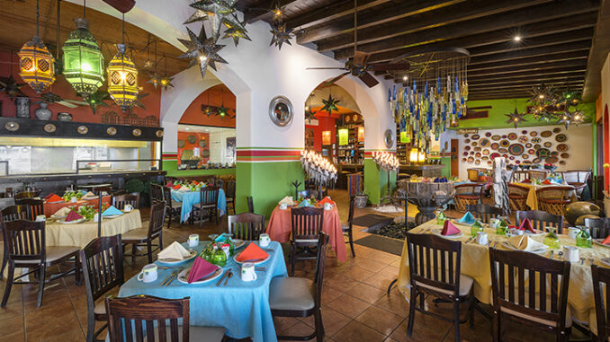

UNA BREVE DESCRIPCIÓN
Es una cocina mexicana extravagantes que recupera sabores prehispánico y tradicionales
y tradicionales junto con ingredientes exóticos y nutritivos
HISTORIA
Es un restaurante iconico de CHIAPAS fundado en 1945, con una exquisita especialidad
en cocina tradicional mexicana.
Gracias a la preferencia de nuestros clientes nos hemos convertido en una cocina emblemática
en la ciudad.



@ Puro sabor Mexicano